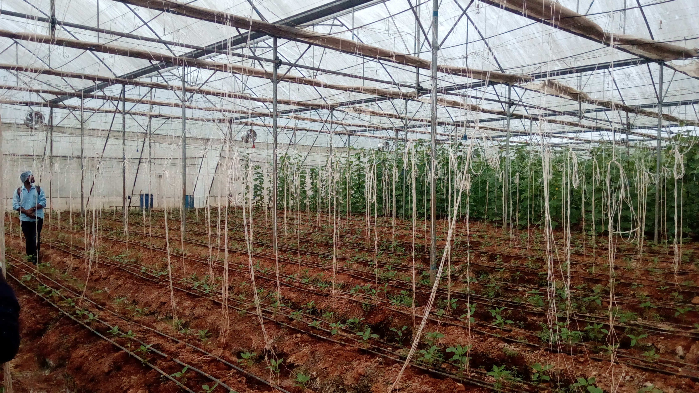
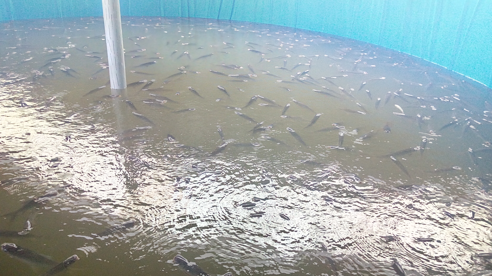
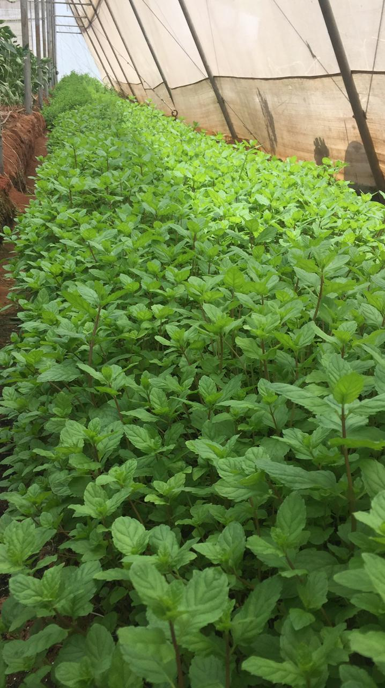

Hemanthहेमन्तహేమంత్Hemanth赫曼特ヘマントHemanthГемант· AI Engineer & Researcher · United States 🇺🇸
My two failed startups taught me what no MBA ever could
I completed my Master's in Artificial Intelligence in 2026 and I'm now actively looking for my next full-time role in AI/ML. In the meantime, I'm volunteering as a Computer Vision & Intelligence Systems Engineer at Q's Ministry, leading the architecture for an offline, on-premise vision-and-agentic-AI assistant — from camera pipeline to on-device reasoning.
ManufacturingHigher EducationChemicalHealthcareAgriculture / AgTechMobility TechEnterprise Cloud & AI
Work Experience
2019 — 2026
2026– Present
AI Computer Vision and Intelligence Assistant Systems Engineer (Volunteer, Full-time)
Q's Ministry / BHITS · Jul 2026 – Present · Remote, California, United States
System Architecture & Computer-Vision Pipeline Leadership: Leading end-to-end technical architecture for an offline, on-premise computer-vision assistance application, defining module interfaces, data formats, and APIs across an engineering team; coordinating model selection for object, scene, pose, hand-position, and action recognition, and owning camera-to-application workflow design so vision outputs integrate cleanly with downstream routine and AI-agent modules.
Agentic AI & On-Premise LLM Integration Architecture: Architecting the integration layer between the computer-vision pipeline and the application's offline agentic AI and local LLM components, applying natural language processing for on-device prompt understanding, and defining event schemas and APIs so vision outputs feed directly into on-device retrieval-augmented reasoning and step-by-step application guidance, keeping the iOS/Android application a single coherent, fully on-premise AI system with no third-party cloud dependency.
Cross-Functional Leadership, Code Review & Technical Risk Management: Leading and mentoring a 3-person development team across full-stack integration, image-processing, and offline agentic-AI engineering; directing pull-request approval and integration review across all workstreams, resolving cross-module conflicts, preventing feature duplication, and reporting technical blockers and safety-relevant risks to keep the team aligned on shared architecture and standards.
2025– 2026
Graduate Student Employee (Part-Time)
University of Central Missouri · Aug 2025 – May 2026 · Warrensburg, Missouri
Data Collection & Validation: Collected, validated, and cleaned institutional library datasets from multiple source systems to support operational reporting and usage analysis.
Exploratory Data Analysis: Conducted exploratory data analysis (EDA) to identify resource demand trends, usage patterns, and data quality gaps across services.
Data Visualization & Reporting: Developed visualizations and analytical summaries to communicate insights and support data-driven planning decisions.
Stakeholder Collaboration: Collaborated with stakeholders to translate reporting requirements into structured, analysis-ready datasets and actionable insights.
2021– 2024
Systems Engineer (Full Time)
Tata Consultancy Services (TCS) · Dec 2021 – Jul 2024 · Hyderabad, India
LLM Integration & RAG: Developed GPT-3.5–powered enterprise applications using Python (FastAPI), Azure OpenAI, and LangChain; designed modular prompt templates, system instructions, and multi-turn conversational flows to improve reliability and accuracy. Built RAG pipelines using Azure Cognitive Search, vector embeddings, chunking strategies, and metadata-based retrieval to deliver grounded, domain-specific answers for document-heavy enterprise use cases.
Statistical Software Development in R & Python: Developed production statistical computing solutions using R and Python supporting enterprise analytics serving 10K+ users; implemented data processing pipelines, statistical models, and machine learning algorithms in both languages; optimized computational performance through efficient data structures, vectorized operations, and algorithmic improvements reducing runtime by 40%; designed modular, reusable code libraries following software engineering best practices including version control (Git), unit testing (testthat in R, pytest in Python), and comprehensive documentation.
Data Structure Optimization & Package Development: Engineered advanced data structures in R and Python optimizing memory usage and performance for large-scale datasets (10M+ records); developed and maintained internal packages and libraries supporting analytical workflows; implemented efficient algorithms for data transformation, aggregation, and statistical computation; applied profiling tools (R profvis, Python cProfile) identifying performance bottlenecks and implementing optimization strategies; created scalable solutions supporting both interactive analysis and production deployments.
Data Engineering & Big Data Pipelines: Engineered large-scale data pipelines using Azure Data Factory and Azure Databricks; developed PySpark ETL jobs on Spark clusters, optimized distributed transformations, and implemented Delta Lake–based architectures on Data Lake Storage (ADLS) to ensure reliable, versioned, and ML-ready datasets.
Research Software Engineering & Repository Development: Built data repository systems managing large-scale datasets with versioning, metadata tracking, and quality validation; developed automated workflows for data ingestion, transformation, and analysis using R and Python; implemented parallel processing frameworks (R parallel, Python multiprocessing) for computationally intensive statistical operations; established software development best practices including code review, continuous integration, and automated testing; maintained production systems with comprehensive monitoring ensuring reliability and correctness of statistical computations. Created data visualizations using ggplot2 and matplotlib for technical and non-technical audiences. Applied statistical methods using R (tidyverse, caret, forecast) and Python (scikit-learn, statsmodels, SciPy) for hypothesis testing, regression modeling, time-series forecasting, and experimental design; developed reproducible statistical analysis workflows producing comprehensive reports and visualizations.
Data Pipeline Architecture & Azure Databricks Engineering: Engineered large-scale data pipelines using Azure Data Factory and Azure Databricks supporting enterprise AI applications; developed PySpark ETL jobs on Spark clusters processing 100K+ records daily, optimized distributed transformations with partitioning strategies, and implemented Delta Lake architectures on Azure Data Lake Storage (ADLS) ensuring reliable, versioned, analytics-ready datasets with 99.9% uptime across production environments.
Data Modeling & Database Optimization: Designed scalable data models supporting business intelligence and analytics workloads using Microsoft SQL Server and Azure cloud platforms; implemented indexing strategies and query optimization best practices reducing data retrieval times by 40%; collaborated cross-functionally with product managers, analysts, and engineers to translate business requirements into technical data architectures meeting governance and performance standards.
Document Intelligence & Cognitive Automation: Integrated Azure Document Intelligence, Cognitive Search, Blob Storage, and Function Apps to automate document ingestion, semantic indexing, and large-scale retrieval workflows. Implemented machine learning and computer vision models using TensorFlow, Keras, and OpenCV for classification.
Advanced Analytics Infrastructure & Semantic Search: Developed semantic search and retrieval systems using Azure Cognitive Search, vector embeddings, and metadata-based indexing to support analytics use cases; implemented chunking strategies and distributed data processing optimizing information retrieval performance; built scalable backend microservices using Python (FastAPI) and SQL supporting cross-database lookups, data aggregation, and structured content extraction for business intelligence applications.
Backend Engineering & Intelligent Retrieval: Developed scalable backend microservices supporting AI inference, vector search, prompt routing, and hybrid retrieval (keyword + embedding) for cross-database lookups, multi-document summarization, and structured content extraction using Python (FastAPI), Azure Cloud, and Microsoft SQL Server.
Production Systems Monitoring & Performance Enhancement: Deployed scalable data systems on Azure Cloud with comprehensive monitoring pipelines tracking data quality metrics, pipeline performance, and system reliability; implemented CI/CD workflows automating deployment processes; displayed strong ownership by iterating on data architectures based on performance analytics and stakeholder feedback; worked in fast-paced environment with regular releases, continuously enhancing data capabilities to solve business-critical problems.
2019– 2021
Data Analyst (Analytics and ML)concurrent with Vaaraahi Farms below
T.I.M.E. Pvt. Ltd. · Jun 2019 – Nov 2021 · Ramanayyapeta, Andhra Pradesh, India (Remote)
Collected, integrated, and analyzed large-scale student enrollment, attendance, examination, and academic performance datasets using Python (Pandas, NumPy), SQL, and Microsoft Excel.
Designed supervised machine learning models including Logistic Regression, Decision Trees, Random Forest, and Gradient Boosting to identify at-risk students, predict enrollment trends, and support institutional planning.
Designed automated ETL pipelines to extract, transform, cleanse, validate, and integrate data from multiple academic systems using SQL joins, window functions, Python automation, and relational databases.
Performed feature engineering, missing value imputation, categorical encoding, and statistical analysis to improve predictive model performance while maintaining over 95% reporting accuracy.
Conducted forecasting and trend analysis to support enrollment planning and institutional resource allocation.
Startup Founder and AI/ML Engineer (Full Time)concurrent with T.I.M.E. above
Vaaraahi Farms (GST Registered) · Oct 2020 – Jun 2021 · Andhra Pradesh, India
Technology Leadership: Founded a registered services business offering technology-driven IoT and ML/data analytics solutions to agriculture-focused clients. Built regression, anomaly-detection, and forecasting models to predict nutrient imbalance, detect system faults, and optimize growing conditions in controlled-environment farms.
Statistical Computing & Predictive Modeling: implemented time-series forecasting models using R (forecast, zoo, tseries) and Python (statsmodels, Prophet) analyzing 1000+ IoT sensor streams; developed anomaly detection algorithms, regression models, and classification systems supporting operational decision-making; applied statistical rigor ensuring model validity, appropriate uncertainty quantification, and reproducible results.
Software Optimization & Algorithm Development: Optimized R and Python code for computational efficiency improving algorithm performance by 30%; implemented efficient data structures for time-series data, sensor measurements, and aggregated statistics; applied performance profiling identifying computational bottlenecks and implementing targeted optimizations; developed scalable solutions balancing statistical accuracy with computational efficiency.
Data-Driven Problem Solving & Requirements Gathering: Collaborated with stakeholders to gather business requirements and data needs; designed robust experiment plans combining quantitative data analysis with domain expertise; translated user requirements into technical data solutions achieving clarity from ambiguous problem statements and delivering measurable business value.
Predictive Maintenance: Implemented predictive maintenance algorithms that identified pump degradation, aeration failures, and chemical drift patterns using IoT telemetry, reducing downtime and enhancing system reliability.
Time-Series Data Processing & Predictive Analytics: Built production data pipelines processing IoT telemetry data using Python (scikit-learn, Pandas), SQL databases, and batch processing workflows; implemented LSTM-based time-series forecasting, anomaly detection algorithms, and optimization models analyzing sensor data patterns; ensured data quality and integrity across multiple data sources, proactively resolving discrepancies and improving data accuracy for operational decision-making in production environments.
ML Analytics: Developed ML-driven solutions for practical on-ground problems such as predicting lettuce tip-burn before it became visible, forecasting ammonia spikes in aquaponics to prevent fish mortality, estimating optimal harvest timing using microclimate patterns, and detecting abnormal pH drift caused by microbial activity resulting in proactive interventions and higher system stability.
Analytics Impact Measurement & Documentation: Measured and tracked impact of data-driven solutions through statistical analysis and controlled experiments; displayed strong ownership by continuously iterating on data models based on results and stakeholder feedback; documented data processes, analytical methodologies, and technical designs; worked closely with end users to understand data needs deeply and deliver analytics solutions improving operational efficiency and system reliability with quantifiable results.
Developed security policies, standards, and procedures documentation aligned to NIST risk management frameworks for organizations across the chemical, AI, and healthcare sectors.
Complete implementation of RNN and Transformer architectures built from scratch in Python. Includes attention mechanisms, positional encoding, and multi-head attention — pure NumPy implementations for deep understanding of modern NLP architectures.
Ground-up implementation of Convolutional Neural Networks without deep learning frameworks. Built convolution layers, pooling, backpropagation, and optimization algorithms to understand the mathematical foundations of computer vision models.
Foundational neural network implementation from first principles. Custom gradient descent, activation functions, forward/backward propagation, and loss functions — all built without ML libraries to master the core mechanics of deep learning.
Distributed AI-driven framework for defect pattern mining and cross-plant rule discovery in manufacturing. Multi-agent architecture enabling collaborative model learning and real-time defect detection across simulated manufacturing networks.
PythonDistributed AIComputer VisionManufacturingQuality Control
In my final semester of college (2020), I launched a second startup that merged my passion for farming with artificial intelligence to revolutionize food production. We developed an AI-powered vertical hydroponics and aquaponics system capable of producing 1 acre's yield in just 1/10th the space, using no soil, minimal water, and fully stacked indoor farming.
Our system used AI models trained on real-time environmental and nutrient data to optimize crop cycles, predict growth stages, and dynamically adjust lighting, water flow, and nutrient mixes for each plant type. Crops included spinach, iceberg, and romaine lettuce, grown under customized indoor grow lights.
On the aquaponics side, we raised korameenu (murrel fish), creating a closed-loop system where fish waste enriched the crops. The result: a fully automated, AI + IoT-driven smart farming platform that maximized efficiency, minimized waste, and brought sustainability into the future — all prototyped while still in college.



2018 – 2019 · Mobility Tech
Jamaivu Machines: Electric Wheelchair Revolution
Back in 2018, while I was still in college, I started a hustle that turned into a full-blown mobility startup. We built a super cool electric add-on for wheelchairs — basically a single-wheel attachment powered by a 36V/48V lithium-ion battery and hub motor that could hit speeds of up to 25 km/h.
Just clamp it onto a regular wheelchair and boom — you've got a detachable 3-wheeled electric ride. No need to buy a bulky electric wheelchair. I led the whole product build from scratch: design, prototyping, testing, and getting real feedback from users.
The goal was simple: make mobility smarter, more affordable, and way more fun for people who need it. It was my first real taste of building something that could actually change lives.